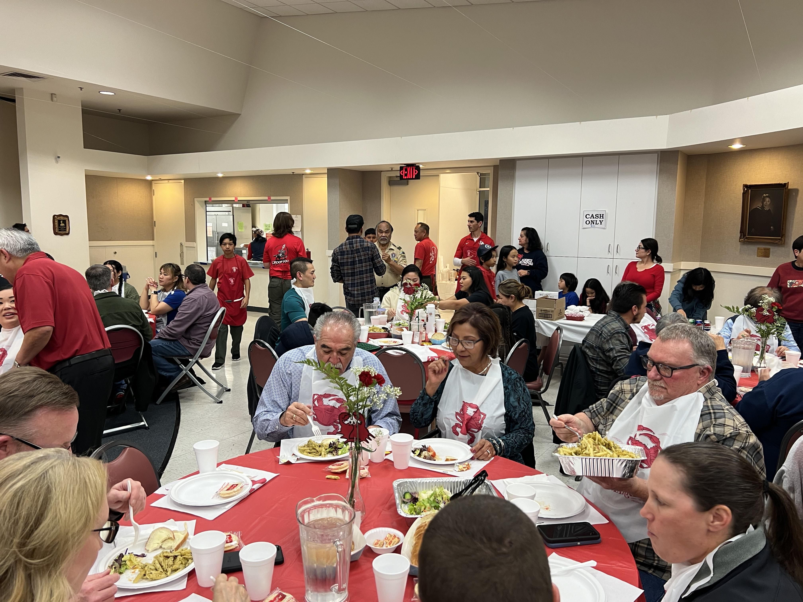
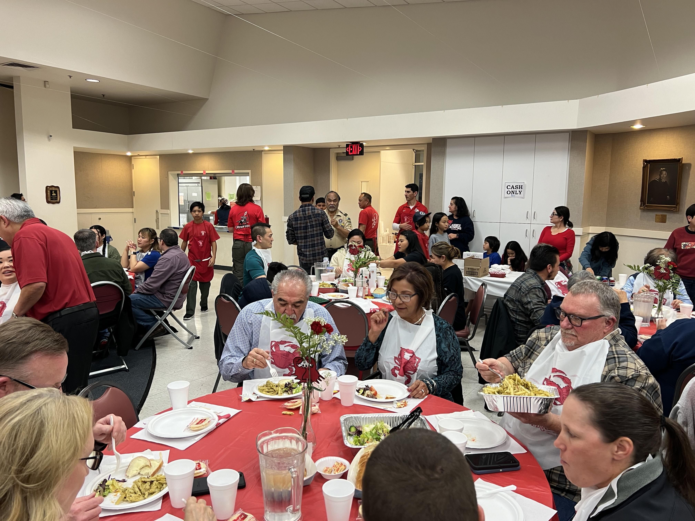

The crab feed is a Scouting fundraiser where Scouts sell tickets and buy, prepare, and serve crab, along with many sides and drinks for the cost of $80 per person. At one of our crab feeds, there was also a raffle and a silent auction, where you can get things like baked goods or a Trader Joe's goody bag.
 

"I loved the crab feed because it felt like a real restaurant. I felt like I served the patrons well. We also enjoyed eating the leftover crab and sides."
-a Scout